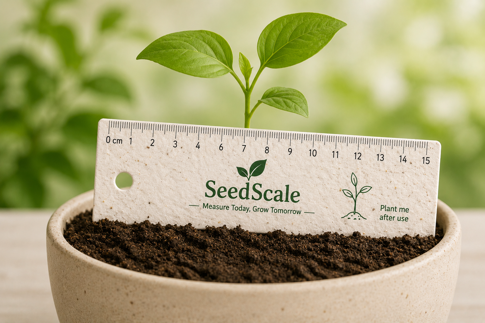

Seedscale is made using recycled paper pulp and natural materials. It decomposes naturally in soil within 3-4 weeks without creating plastic waste.
Seedscale works as a normal measuring scale. After use, it can be planted to grow basil, tomato, marigold, coriander and other plants.
Made using recycled paper, vegetable-based inks and chemical-free seeds. It is completely safe for children and the environment.
It teaches students about measurement, responsibility, sustainability and gardening through practical experience.
Production uses recycled materials and avoids plastic manufacturing, helping reduce CO₂ emissions.
Customizable product option for schools, NGOs and companies for eco-friendly campaigns.
Material: Handmade seed paper created from recycled paper pulp with organic seeds.
Size: Available in 15cm and 30cm versions with clear centimeter and inch markings.
Seed Options: Basil, Tomato, Marigold, Coriander and Mustard (seasonal availability).
Printing: Uses eco-friendly soy-based inks that are safe for soil and plants.
Durability: Strong enough for regular classroom use. Keep dry until ready for planting.
Packaging: Plastic-free kraft paper sleeve with planting instructions.

Use Seedscale like a normal measuring scale. Avoid soaking it in water during use.
After use, tear the scale into small pieces. This helps it mix with soil easily.
Place the pieces on soil and cover gently with a thin layer of soil.
Water regularly and keep the soil moist. Provide enough sunlight for growth.
After 7-14 days, sprouts begin to appear and your Seedscale grows into a plant.
✔ Plant within 1 year for best germination rate.
✔ Store in a cool and dry place before planting.
✔ Best planted during spring and summer seasons.